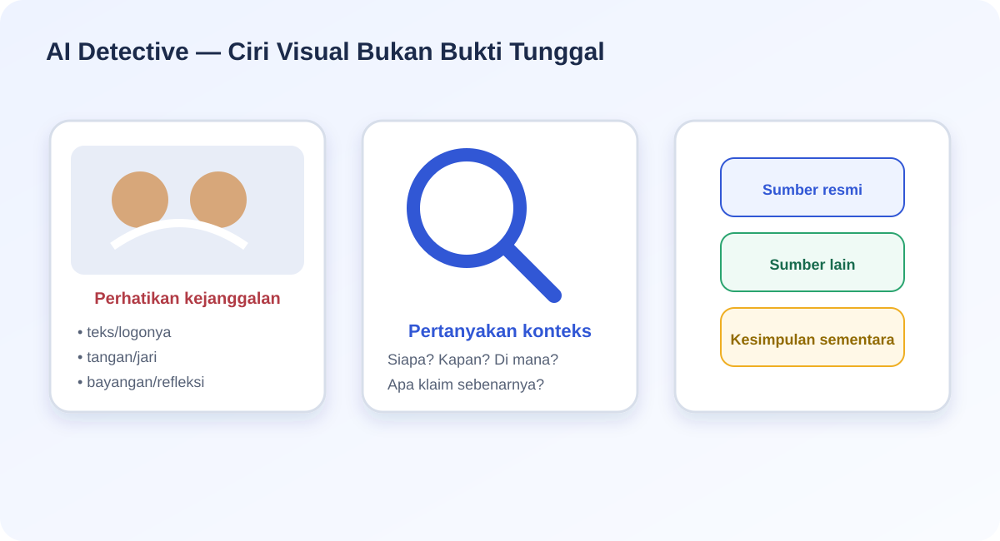
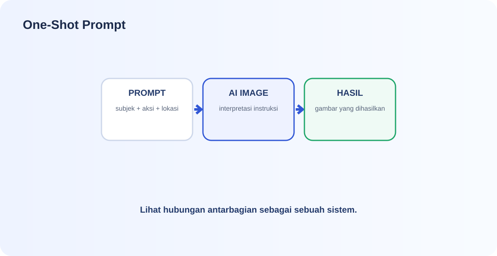

#1Algoritma & Flowchart2 poin
Ulangan Harian Informatika
Algoritma, AI, Self-Driving, IoT, Machine Learning, AI Detective, Data BPS, dan One-Shot Prompt.
Pilih Nama Peserta
Pilih nama terlebih dahulu. Setelah ulangan dimulai, identitas akan terkunci.
🎮
30 Mini Game
Setiap soal objektif bernilai 2 poin.
✍️
10 Essay Singkat
Jawaban ringkas, jelas, dan langsung pada konsep.
📝
5 Uraian Panjang
Jelaskan proses, alasan, dan penerapan secara runtut.
Algoritma & Flowchart
Algoritma & Flowchart
Jawab dengan teliti. Setiap soal mini game bernilai 2 poin.
#2Algoritma & Flowchart2 poin
Simbol flowchart yang paling tepat untuk menunjukkan sebuah kondisi atau pertanyaan seperti “Nilai ≥ 75?” adalah…
#3Algoritma & Flowchart2 poin
Manakah contoh algoritma yang memiliki struktur sequence?
#4Algoritma & Flowchart2 poin
Dalam flowchart sistem login, urutan yang paling logis adalah…
#5Algoritma & Flowchart2 poin
Seorang siswa ingin membuat algoritma untuk menentukan kelulusan berdasarkan nilai. Langkah “jika nilai ≥ 75 maka lulus, jika tidak maka belum lulus” termasuk…
AI di Kehidupan Sehari-hari
AI di Kehidupan Sehari-hari
Jawab dengan teliti. Setiap soal mini game bernilai 2 poin.
#6AI di Kehidupan Sehari-hari2 poin
Sistem face unlock menggunakan kamera untuk mengenali pola wajah pengguna. Penggunaan AI yang paling tepat adalah…
#7AI di Kehidupan Sehari-hari2 poin
Platform video mempelajari riwayat tontonan lalu memberikan rekomendasi. Rekomendasi tersebut merupakan…
#8AI di Kehidupan Sehari-hari2 poin
Manakah contoh yang paling jelas menggunakan model AI untuk mengenali pola, bukan sekadar aturan tetap?
#9AI di Kehidupan Sehari-hari2 poin
ChatGPT yang menghasilkan teks baru berdasarkan instruksi pengguna merupakan contoh…
#10AI di Kehidupan Sehari-hari2 poin
Pernyataan yang paling tepat tentang hasil AI adalah…
Self-Driving, IoT & ML
Self-Driving, IoT & ML
Jawab dengan teliti. Setiap soal mini game bernilai 2 poin.
#11Self-Driving, IoT & ML2 poin
Pada self-driving car, kamera, radar, lidar, dan GPS terutama berfungsi untuk…

#12Self-Driving, IoT & ML2 poin
Dalam alur self-driving, tahap ketika sistem memahami bahwa objek tertentu adalah kendaraan atau pejalan kaki disebut…
#13Self-Driving, IoT & ML2 poin
Dalam tempat sampah pintar, kamera/sensor mengirim data benda yang terdeteksi ke sistem. Bagian ini paling berkaitan dengan…
#14Self-Driving, IoT & ML2 poin
Dalam smart trash bin, proses “gambar botol dipelajari model lalu diklasifikasikan sebagai anorganik” paling tepat disebut…
#15Self-Driving, IoT & ML2 poin
Ketika self-driving car mendeteksi adanya mobil di depannya berhenti mendadak, mekanisme yang paling tepat adalah…

AI Detective
AI Detective
Jawab dengan teliti. Setiap soal mini game bernilai 2 poin.
#16AI Detective2 poin
Sebuah gambar viral memiliki tangan yang tampak janggal. Kesimpulan paling tepat adalah…

#17AI Detective2 poin
Saat memeriksa klaim pada sebuah gambar, pertanyaan yang paling tepat pada tahap konteks adalah…
#18AI Detective2 poin
Jika sebuah gambar terlihat meyakinkan tetapi belum ada sumber resmi atau sumber independen yang menguatkan klaimnya, label yang paling aman adalah…
#19AI Detective2 poin
Pernyataan “Saya melihat bayangan pada gambar tidak konsisten” merupakan contoh…
#20AI Detective2 poin
Mengapa gambar asli pun tetap perlu diperiksa konteks dan sumbernya?
Data BPS → Infografis
Data BPS → Infografis
Jawab dengan teliti. Setiap soal mini game bernilai 2 poin.
#21Data BPS → Infografis2 poin
Sebelum memvisualisasikan data BPS, hal pertama yang perlu diperiksa adalah…
#22Data BPS → Infografis2 poin
Kamu ingin membandingkan jumlah penduduk beberapa kabupaten/kota pada satu tahun yang sama. Visualisasi yang paling sesuai untuk memulai adalah…

#23Data BPS → Infografis2 poin
Kamu ingin menunjukkan perubahan suatu indikator BPS dari tahun 2020 sampai 2025. Visualisasi yang lebih sesuai adalah…
#24Data BPS → Infografis2 poin
Jika AI mengubah angka BPS agar grafik terlihat lebih rapi, tindakan yang paling tepat adalah…
#25Data BPS → Infografis2 poin
Alur kerja yang paling tepat untuk membuat infografis interaktif dengan bantuan AI adalah…
One-Shot Prompt
One-Shot Prompt
Jawab dengan teliti. Setiap soal mini game bernilai 2 poin.
#26One-Shot Prompt2 poin
Bagian prompt yang menjelaskan “siapa/apa yang harus muncul” adalah…

#27One-Shot Prompt2 poin
Perhatikan gambar AI berikut. Prompt mana yang paling sesuai untuk menghasilkan gambar tersebut?
#28One-Shot Prompt2 poin
Sebuah gambar akan digunakan sebagai banner website dengan format lebar. Detail prompt yang penting ditambahkan adalah…
#29One-Shot Prompt2 poin
Jika kamu tidak ingin gambar berisi tulisan atau watermark, bagian prompt yang tepat adalah…
#30One-Shot Prompt2 poin
Tujuan utama One-Shot Prompt Challenge adalah…
ESSAY SINGKAT
10 Soal Essay Singkat
Jawab ringkas tetapi tetap menunjukkan pemahaman konsep.
ES-1Essay Singkat2 poin
Jelaskan dengan kata-katamu sendiri perbedaan algoritma dan flowchart.
ES-2Essay Singkat2 poin
Berikan satu contoh masalah yang cocok diselesaikan dengan struktur selection dan jelaskan kondisinya.
ES-3Essay Singkat2 poin
Sebutkan dua contoh penggunaan AI dalam kehidupan sehari-hari dan jelaskan fungsi AI pada masing-masing contoh.
ES-4Essay Singkat2 poin
Jelaskan perbedaan sederhana antara IoT dan machine learning.
ES-5Essay Singkat2 poin
Jelaskan secara ringkas apa yang terjadi ketika self-driving car mendeteksi mobil di depannya berhenti mendadak.
ES-6Essay Singkat2 poin
Sebutkan tiga hal yang perlu diperiksa ketika kamu menemukan gambar atau informasi yang diduga dibuat AI.
ES-7Essay Singkat2 poin
Jelaskan perbedaan antara fakta yang terlihat pada gambar dan klaim yang dibuat tentang gambar tersebut.
ES-8Essay Singkat2 poin
Sebutkan langkah utama untuk mengubah data BPS menjadi infografis interaktif dengan bantuan ChatGPT.
ES-9Essay Singkat2 poin
Sebutkan minimal lima unsur penting yang dapat dimasukkan ke dalam one-shot prompt untuk menghasilkan gambar.
ES-10Essay Singkat2 poin
Mengapa hasil AI tetap perlu diperiksa dan tidak boleh langsung dianggap benar?
URAIAN PANJANG
5 Soal Uraian
Gunakan penjelasan yang runtut dan kaitkan dengan konsep yang dipelajari.
UR-1Uraian Panjang4 poin
Rancang sebuah algoritma dan jelaskan flowchart untuk menentukan apakah seorang siswa layak mengikuti ujian berdasarkan dua syarat: kehadiran minimal 80% dan nilai tugas minimal 75%. Jelaskan urutan proses dan keputusan yang terjadi.
UR-2Uraian Panjang4 poin
Jelaskan bagaimana AI digunakan dalam kehidupan sehari-hari. Pilih minimal tiga contoh, kemudian analisis data apa yang mungkin digunakan, keluaran yang dihasilkan, manfaat, dan satu risiko atau keterbatasan dari penggunaan AI tersebut.
UR-3Uraian Panjang4 poin
Jelaskan secara runtut bagaimana self-driving car dapat merespons ketika kendaraan di depannya berhenti mendadak. Hubungkan peran sensor, perception, decision, control, serta jelaskan bagaimana machine learning dan IoT dapat terkait pada sistem tersebut.
UR-4Uraian Panjang4 poin
Bayangkan kamu menemukan gambar viral yang diklaim menunjukkan sebuah peristiwa penting. Jelaskan langkah investigasi yang akan kamu lakukan untuk menentukan apakah informasi tersebut benar, belum terverifikasi, atau menyesatkan. Bedakan antara bukti visual, konteks, sumber, klaim, dan kesimpulan.
UR-5Uraian Panjang4 poin
Buat rancangan proyek mengubah satu dataset BPS menjadi infografis interaktif menggunakan ChatGPT. Jelaskan bagaimana kamu memahami data, menentukan pesan utama, memilih jenis visualisasi, menyusun prompt untuk ChatGPT, memeriksa angka, dan memastikan hasil akhir tidak menyesatkan.
HASIL
Hasil Ulangan
Nilai objektif dihitung otomatis. Essay dan uraian tetap memerlukan penilaian guru.
Peserta
—
0 / 60
Mini Game (benar)
0 / 300 / 30 terjawab
Essay Singkat
0 / 10 terisiUraian Panjang
0 / 5 terisiSkor maksimal: 100 poin = 60 poin mini game + 20 poin essay singkat + 20 poin uraian panjang. Nilai akhir ditetapkan setelah guru memberi skor pada jawaban essay/uraian.